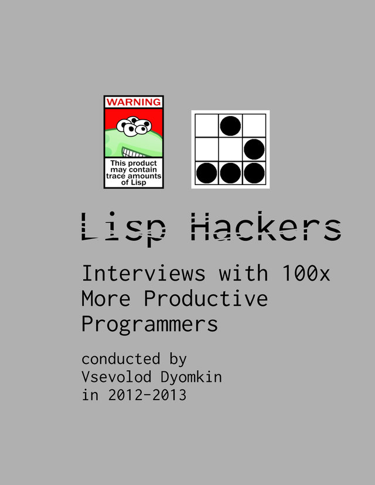

Lisp hackers: Interviews with 100x more productive programmers

Vsevolod Dyomkin. Lisp Hackers: Interviews with 100x More Productive Programmers. Leanpub. 2013.
I’m not convinced by the sub-title: at the very least, there’s no evidence to support the claim that Lisp programmers really are hundreds of time more productive. But there are some serious insights here from individuals who’ve made serious contributions to the Lisp world – and beyond. The contributions all take the form of email interviews consisting of a standard prelude of questions (how did you discover Lisp?, do you use it at work?) followed by a couple of questions tailored to the interviewee.
The practitioners selected have all been affected by Lisp, either in terms of it changing their own thought processes, or by helping to develop the core ecosystem, or by applying Lisp to real-world problems, and often to great effect. My favourite was the discussion with someone who was using Common Lisp to develop low-latency network routing for financial services: it’s hard to think of a better example of Lisp’s power and range.